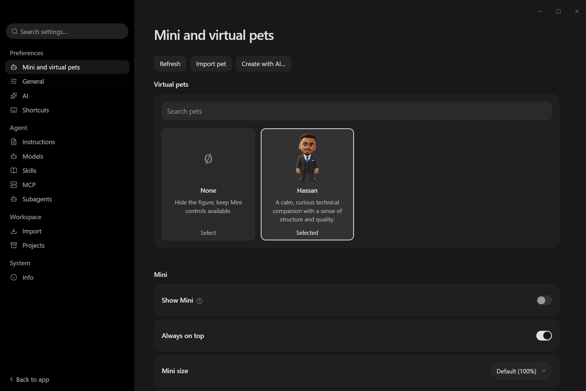
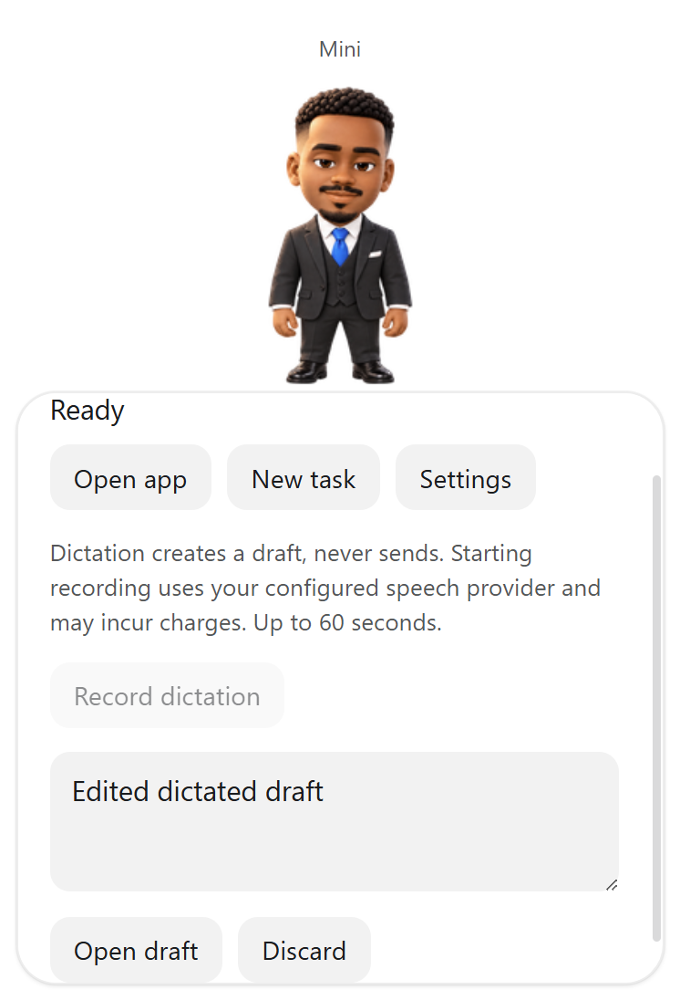
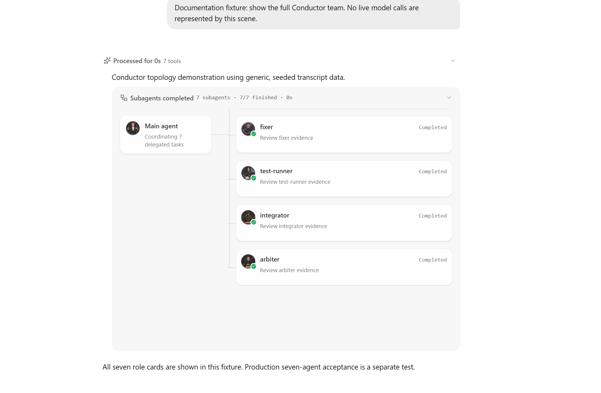
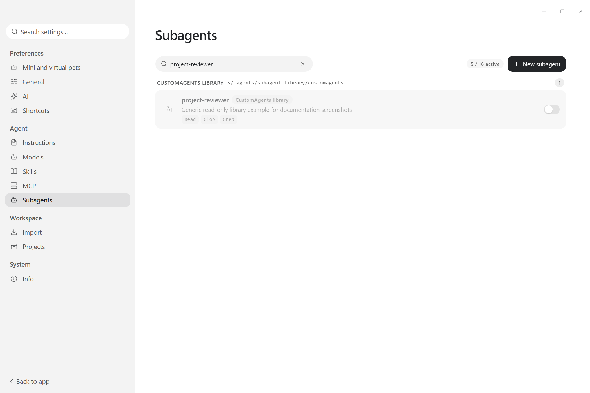

Actual isolated screenshot review
Actual gallery; isolated data, bundled Hassan
Actual Mini; loopback speech and external media fixture
Actual chat renderer; explicitly seeded seven-role transcript, not live execution
Actual Settings; generic read-only disabled library fixture